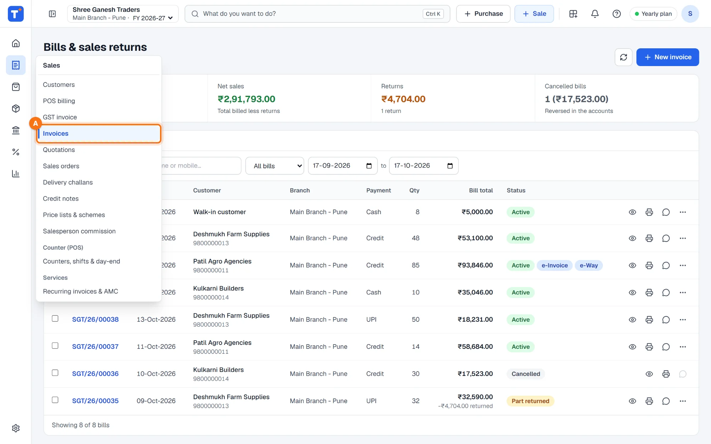
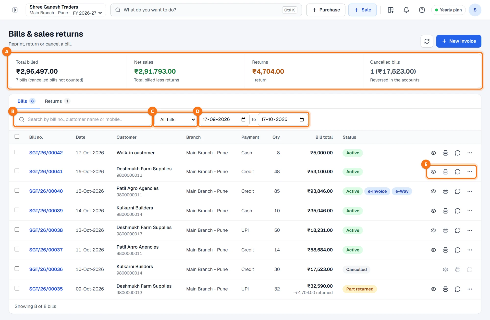
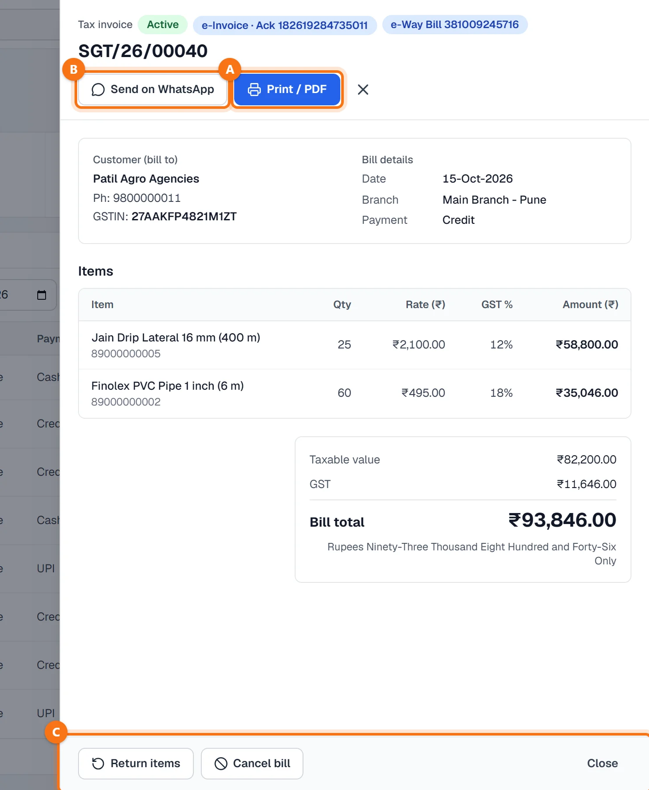
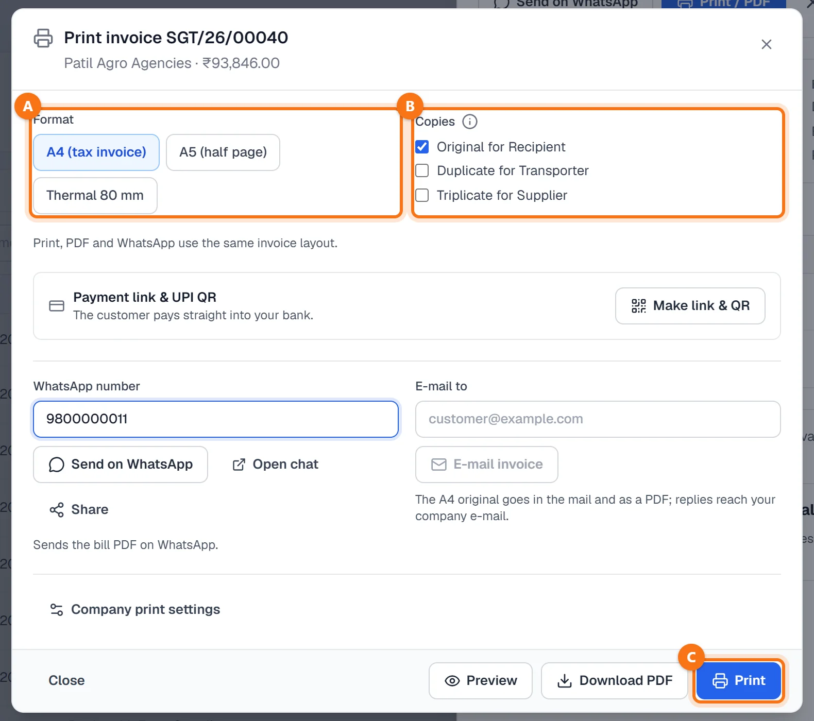
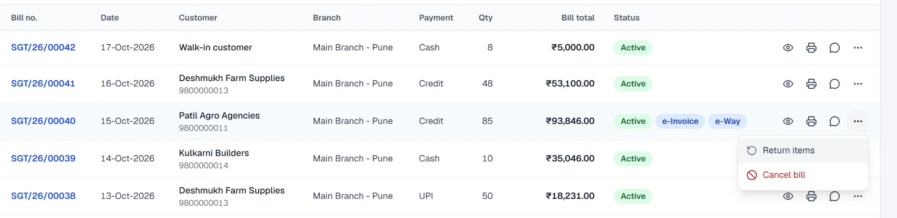
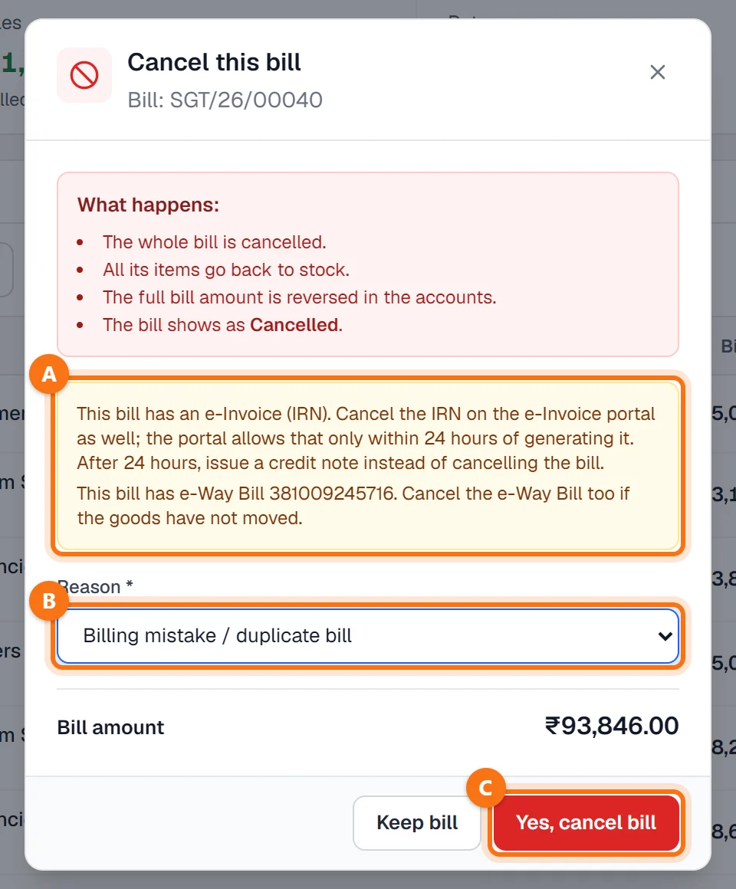

Techstar ERP मराठी आणि हिंदीतही वापरता येतो. वर उजवीकडे तुमच्या नावाच्या आद्याक्षराच्या गोल बटणावर click करा → Language (भाषा) → मराठी. ERP चा menu मराठीत दिसतो (उदा. Sales = विक्री). बिले आणि इतर कायदेशीर कागदपत्रे नेहमीप्रमाणेच छापली जातात. या guide मधले screenshots English menu चे आहेत.
सुरू करण्यापूर्वी
बिले Sales → GST invoice आणि Sales → POS billing मध्ये बनतात. या यादीत ती सगळी दिसतात; माल परत घेईपर्यंत किंवा बिल रद्द करेपर्यंत काहीही बदलत नाही.
बिल रद्द करणे मालक, admin, अकाउंटंट किंवा शाखा मॅनेजरचे काम आहे. इतर युजर विनंती करू शकतात; ती त्यांच्या supervisor कडे मंजुरीसाठी जाते.
Sales → Invoices उघडा
डाव्या menu मध्ये Sales → Invoices A वर click करा (मराठी menu मध्ये: विक्री → इनव्हॉइस यादी). या स्क्रीनवर menu फक्त icons चा असतो; Sales च्या icon वर माउस नेला की त्यातल्या स्क्रीन दिसतात. स्क्रीनचे नाव Bills & sales returns आहे.

बिल शोधा
वरच्या बेरजा A दाखवलेल्या तारखांच्या आहेत: Total billed (रद्द बिले धरलेली नाहीत), Net sales (बिले वजा परतावा), Returns आणि Cancelled bills.
- Search by bill no., customer name or mobile… B — नंबर किंवा नावाचा भाग टाइप करा.
- Status यादी C: All bills, Active, With returns किंवा Cancelled.
- तारखा D: आधी शेवटचे 30 दिवस दिसतात. जुने बिल शोधायचे असेल तर तारखा बदला.
प्रत्येक ओळीत बिल नंबर, तारीख, ग्राहक, शाखा, पेमेंट, नग, एकूण रक्कम आणि status दिसतो — Active, Part returned, Fully returned किंवा Cancelled, आणि असेल तिथे e-Invoice व e-Way बॅज. शेवटची बटणे E: पाहा, प्रिंट / शेअर, WhatsApp वर पाठवा आणि आणखी पर्यायांसाठी ⋯.

एकदम अनेक बिले प्रिंट: बिलांवर टिक करा आणि Print selected वर click करा. प्रत्येक इनव्हॉइस एकाच document मध्ये वेगळ्या पानावर प्रिंट होते (एका वेळी 100 बिलांपर्यंत).
बिल उघडा
बिल नंबरवर (किंवा डोळ्याच्या icon वर) click करा. बिल उजवीकडे एका पॅनलमध्ये उघडते — status, ग्राहक (GSTIN आणि फोनसह), तारीख, शाखा, पेमेंट, आयटम, taxable value, GST आणि अक्षरी एकूण रक्कम.
वर: Print / PDF A आणि Send on WhatsApp B. खाली C: Return items आणि Cancel bill.

पुन्हा प्रिंट, PDF, WhatsApp किंवा ई-मेल
Print / PDF ने प्रिंटची विंडो उघडते.
- Format A: A4 (tax invoice), A5 (half page) किंवा Thermal 80 mm.
- Copies B: Original for Recipient, Duplicate for Transporter, Triplicate for Supplier.
- Make link & QR ने ग्राहकासाठी पेमेंट लिंक आणि UPI QR बनतो.
- Send on WhatsApp ने बिलाची PDF दाखवलेल्या नंबरवर जाते; E-mail invoice ने A4 original PDF म्हणून ई-मेल होते.
- Preview, Download PDF किंवा Print C. प्रिंट, PDF आणि WhatsApp — तिन्हीत इनव्हॉइसचा एकच layout असतो.

माल परत किंवा रद्द
ओळीच्या ⋯ बटणात बिलाच्या पॅनलच्या खालचेच दोन पर्याय आहेत:
- Return items — ग्राहक काही किंवा सगळा माल परत आणतो. फक्त परत आलेला माल स्टॉकमध्ये जातो आणि त्याचे क्रेडिट मिळते; बिल तसेच राहते. पहा सेल्स रिटर्न आणि क्रेडिट नोट.
- Cancel bill — संपूर्ण बिलच चुकले आहे (उदा. डुप्लिकेट) आणि ते रद्द करायचे आहे.

बिल रद्द करा
Cancel this bill विंडो काय होईल ते सांगते: संपूर्ण बिल रद्द होते, सगळे आयटम स्टॉकमध्ये परत जातात, पूर्ण रक्कम हिशोबात उलटली जाते आणि बिल Cancelled दिसते.
बिलाला ई-इनव्हॉइस किंवा ई-वे बिल असेल तर पिवळी सूचना A ते त्यांच्या पोर्टलवरही रद्द करायची आठवण करून देते. ई-इनव्हॉइस पोर्टलवर IRN बनवल्यापासून फक्त 24 तासांच्या आत रद्द करता येतो; त्यानंतर बिल रद्द करण्याऐवजी क्रेडिट नोट द्या.
Reason B निवडा — Billing mistake / duplicate bill, Order cancelled before goods were handed over, Payment failed / cheque bounced किंवा Wrong customer billed — आणि Yes, cancel bill C वर click करा. Keep bill ने बिल आहे तसेच राहते.

रद्द केलेले बिल डिलीट होत नाही: ते त्याचा नंबर ठेवते आणि यादीत Cancelled म्हणून राहते. ते Total billed मध्ये धरले जात नाही.
नेहमीचे प्रश्न
जुने बिल सापडत नाही. का?
बिल रद्द करू की माल परत घेऊ?
माझे रद्द करणे मंजुरीसाठी का गेले?
बिलाचे ई-इनव्हॉइस 24 तासांपेक्षा जुने आहे. आता काय?
बिलावर ग्राहकाचा मोबाईल नसेल तर WhatsApp वर पाठवता येते का?
आणखी guides
Screenshots Techstar ERP मधील demo कंपनीचे आहेत (Shree Ganesh Traders, Pune). सर्व नावे, GSTIN, रकमा आणि कागदपत्रांचे नंबर नमुना माहिती आहेत.